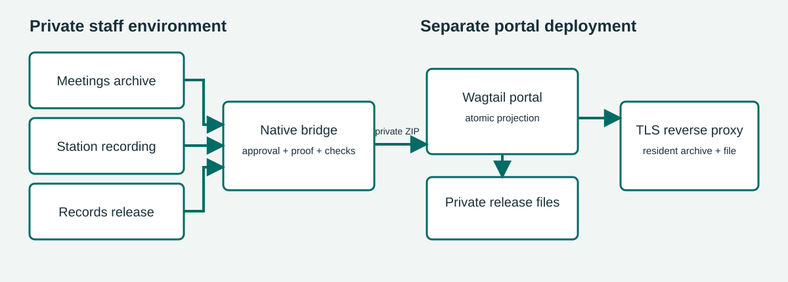

Townlight Portal guide
Townlight Beta 1 · local integration candidate
The portal is a separately deployed suite capability for city pages and public meeting archives. It brings together a public Meetings archive, a completed Station recording and a Records release copy selected for publication. It does not add a tenth product. The existing signed Beta 1 installer and prior Sandbox evidence predate this local portal integration; they do not demonstrate that it is installed or publicly deployed. CivicCast remains separate.
For staff: prepare and publish
- In Meetings, publish the intended non-closed meeting archive. Review its title, scheduled time, agenda, packet, minutes and summary for public use.
- Complete the corresponding Station recording and the Records request and release workflow. Records must have a current approved response, completed verified artifacts, a fulfilled request and an eligible managed release copy with verified lineage to that recording. Keep the original private.
- Obtain the Records request UUID from the trusted staff workflow. A fulfilled request or prepared copy is not consent to publish.
- A Wagtail superuser opens Townlight publication in
/admin/, enters the request UUID, selects Find approved releases, and chooses the intended result. The form fills the archive, meeting, recording, request and release-copy IDs and expected SHA-256; approval remains unchecked. Review the selection and public content, select Publish or update, and explicitly approve. Confirm the resulting meeting page and approved file as a resident would. Ordinary Wagtail editors cannot use this publisher. - To remove it from the public archive, use the same selection and hash, choose Withdraw, and explicitly approve. Verify that the meeting and file are no longer accessible. Withdrawal hides the projection; retain source records and follow local retention policy.
An unsuccessful synchronization leaves the previous publication intact. Repeating a successful publication updates the same archive identity. If source records change, review and explicitly publish again; do not assume a source error withdraws a prior version.
Residents
The meeting archive is at /meetings/. A published
meeting page at /meetings/<pk>/ presents the approved
public meeting text and links to its release at
/meetings/<pk>/release/. The approved release bytes
are served with the selected MIME type and support byte ranges for video
playback. Public text is filtered; requester contact information,
internal notes, raw payloads, local paths and session proof are not
public fields. This integration is for completed release copies, not
live YouTube streaming. Station’s separate CivicCast and YouTube
workflows retain their own controls.
Deployment and setup
The portal is a separate Wagtail deployment with its own database. Keep the native desktop runtime bound to loopback; do not expose it to the internet. Arrange a trusted private connection between the portal service and native runtime. The bridge accepts HTTPS origins or loopback HTTP origins; it does not follow redirects or use environment proxies. Restrict the server-side proof file to the portal service account and provision a native principal with both Meetings and Records permissions. Never put the proof in a browser, selection file, log or public document.
From the portal directory, use Python 3.13, install
python -m pip install --require-hashes -r requirements.lock,
run python manage.py migrate,
python manage.py setup_demo, and
python manage.py createsuperuser. For local evaluation run
python manage.py runserver 127.0.0.1:8000. Set a unique
TOWNLIGHT_SECRET_KEY, TOWNLIGHT_DEBUG=0,
allowed hosts, TLS and appropriate static and media service before
deployment. TOWNLIGHT_DB selects the database path;
TOWNLIGHT_BRAND selects the site name. Protect the database
and the private release directory together.
TOWNLIGHT_RELEASE_ROOT is an absolute private directory
outside public media; by default it is private-releases
under the portal directory. These setup steps do not commission a hosted
site or alter the already released installer.
Set TOWNLIGHT_NATIVE_ORIGIN to the trusted native origin
and TOWNLIGHT_NATIVE_PROOF_FILE to an absolute private
proof-file path. Sign in to the active native desktop with an account
authorized for both modules. The active profile’s
config/local-session.json contains
session_hash; this is an active session proof, not a
durable service token. Copy it without displaying it into an absolute
file in a directory already restricted to the portal service account.
Replace both placeholders in this PowerShell command with the actual
private paths:
[System.IO.File]::WriteAllText('<protected-absolute-path>\portal-proof.txt', (Get-Content -LiteralPath '<active-profile>\config\local-session.json' -Raw | ConvertFrom-Json).session_hash, [System.Text.UTF8Encoding]::new($false))Refresh the protected proof after session expiry, sign-out, account
change or credential change. Do not print or publish it.
TOWNLIGHT_DISPLAY_TIMEZONE is an IANA time zone, defaulting
to UTC. A private selection file can drive the same
operation from the portal directory:
{"action":"publish","approve_publication":true,"archive_id":"00000000-0000-4000-8000-000000000001","meeting_id":"00000000-0000-4000-8000-000000000002","recording_id":"00000000-0000-4000-8000-000000000003","request_id":"00000000-0000-4000-8000-000000000004","release_copy_id":"00000000-0000-4000-8000-000000000005","expected_release_sha256":"0000000000000000000000000000000000000000000000000000000000000000"}These IDs and hash are placeholders. Run
python manage.py sync_townlight selection.json. For
withdrawal change action to withdraw, retain
the selection fields and explicit approval, and verify removal. Restrict
the selection file because it contains internal identifiers.
Prepare the candidate native runtime
The existing signed installer predates the portal bridge and does not include its native endpoints. Prepare a separate matching native runtime with the compatible Records, Meetings, Core, Access and Notice dependencies, normal activation, profile and database contracts. Do not patch the installed host runtime. From the suite source root, build the candidate wheel into a chosen output directory:
python -m pip wheel --no-deps --wheel-dir '<wheel-output>' desktop/runtime/python-servicesIn the separately prepared matching runtime, use its Python
executable to install the built
civicsuite_runtime-0.1.0-py3-none-any.whl with
python -m pip install --no-deps --force-reinstall '<wheel-output>\civicsuite_runtime-0.1.0-py3-none-any.whl'.
Preserve the intended profile, activation and database configuration;
use meetings-beta or a higher applicable product profile.
With that runtime’s Python, start
python -m civicsuite_runtime.services; it binds
127.0.0.1:15480 by default, or the port selected by
CIVICSUITE_RUNTIME_PORT. Keep this private and provide the
portal’s server-side active proof and trusted origin as described above.
Verify the authenticated selections endpoint with a real eligible
request in the prepared environment before relying on publication. See
verification and test inputs for the
isolated acceptance runner and its explicit flags. These instructions do
not upgrade the old installer or establish installed or public
deployment acceptance.
Production service and reverse proxy
runserver is for local demonstration only. For
deployment set TOWNLIGHT_DEBUG=0, a unique
TOWNLIGHT_SECRET_KEY of at least 50 characters,
TOWNLIGHT_ALLOWED_HOSTS to the canonical host,
TOWNLIGHT_BASE_URL to the HTTPS origin,
TOWNLIGHT_CSRF_TRUSTED_ORIGINS to that HTTPS origin, and
TOWNLIGHT_STATIC_ROOT to the private deployment’s
collected-static directory. Run python manage.py migrate,
then python manage.py collectstatic, and start
python serve.py --port 8000 under a supervised service
account. Waitress binds only 127.0.0.1; stop the supervised
service cleanly before backup or maintenance. In production Django
enables secure cookies, HTTPS redirect and HSTS.
Terminate TLS in a reverse proxy on the same host. Set
TOWNLIGHT_TRUST_TLS_PROXY=1 only when the proxy removes
client-supplied forwarded headers and sets its own HTTPS scheme and
canonical Host. Never expose the native desktop port. Replace the
example hostname, certificate and static directory with deployment
values; serve only collected static files directly. The application
handles all other routes, including approved release files:
server {
listen 443 ssl;
server_name town.example.gov;
ssl_certificate /etc/ssl/town/fullchain.pem;
ssl_certificate_key /etc/ssl/town/privkey.pem;
location /static/ { alias /srv/townlight/static/; }
location / {
proxy_pass http://127.0.0.1:8000;
proxy_set_header Host town.example.gov;
proxy_set_header X-Forwarded-Proto https;
proxy_set_header X-Forwarded-For "";
proxy_set_header X-Forwarded-Host "";
proxy_set_header Forwarded "";
}
}Keep the release directory outside every public static or media alias. Test the deployed HTTPS origin, admin, archive, range playback and explicit withdrawal using an approved synthetic record before use.
Architecture and API

The server calls POST /desktop/v1/portal/bundle with the
selection JSON and the X-Townlight-Session header. The
native principal must have both civicclerk and
civicrecords-ai permissions. The returned ZIP contains
manifest.json and, for publication,
release.bin; the portal validates identity, hashes, sizes
and allowable fields before an atomic update. Withdrawal carries a
manifest without release bytes. The public projection includes meeting
text and ID/hash provenance, not the private source payload. The bridge
streams bundles and release bytes through private files. Set
TOWNLIGHT_PORTAL_MAX_BYTES consistently on both services;
the default is 8 GiB and the maximum is 64 GiB. Allow private disk space
for the bundle, staged copy and retained releases. The portal serves MP4
or octet-stream releases. This transport limit is not the end-to-end
recording limit: the inherited Records managed-file receipt limits both
originals and release copies to 2,147,483,647 bytes. At Station’s
default 6,000 kbps video rate, approximately 47 minutes reaches 2 GiB
before accounting for audio and container overhead. Plan capture
duration and bitrate before recording: for example, 2,000 kbps video
plus audio for two hours is roughly 1.9 GB, depending on actual rates
and overhead. Measure the resulting files and leave margin. The portal
does not automatically transcode recordings. Consult the checked-in
bridge and portal source for the exact contract and errors; do not log
session proofs.
python manage.py export_public <empty-directory>
exports published pages, metadata and approved release bytes with
hashes. Secure the export as appropriate. Stop the portal and any
synchronization before taking a consistent backup of the SQLite database
and private release directory together; preserve private configuration
and proof separately. Restore the matched database and releases to an
isolated environment, set permissions and paths, then verify public
pages, approved file hashes and withdrawal state before resuming
service. A failed source sync preserves the prior projection;
investigate permissions, source eligibility, IDs, expected hash,
connection and proof-file access before retrying. An explicit withdrawal
is necessary to remove a previously published item.
Bundle contract and errors
For discovery, the trusted portal server can call
GET /desktop/v1/portal/selections?request_id=<UUID>
with X-Townlight-Session. The native actor must have both
module permissions. The JSON response is
{"selections":[{"title":"<public archive title>","selection":{...}}]};
each selection has all publication request fields, with
action set to publish and
approve_publication set to false. The Wagtail
lookup uses this endpoint. Selecting a result supplies
request_id, release_copy_id and
archive_id as query parameters and fills the form without
granting approval. An empty list means no eligible choice was returned;
review source readiness and the request.
The JSON request requires action (publish
or withdraw), boolean approve_publication set
to true, UUIDs archive_id,
meeting_id, recording_id,
request_id, release_copy_id, and a
64-character lowercase expected_release_sha256. No extra
request fields are accepted. Send it only from the trusted portal server
with X-Townlight-Session containing its private session
proof. For example, the supported operator command
python manage.py sync_townlight selection.json reads the
selection illustrated above and supplies that header from the protected
proof file.
A successful publish returns application/zip with
manifest.json and release.bin. Manifest
version 1 contains version, action,
archive_id, meeting_id,
recording_id, request_id,
release_copy_id, original_sha256,
title, timezone-aware scheduled_start,
agenda, packet, minutes,
summary, and release. The release
object contains path (release.bin),
sha256, size, and media_type.
Withdrawal returns a ZIP containing only manifest.json with
version, action and archive_id.
The portal validates the selection, manifest and bytes before changing
its projection.
Invalid input or missing explicit approval is rejected; authorization
failures are rejected by the native identity layer. Unavailable or
changed source data produces HTTP 409 with
Publication sources unavailable or changed; the portal
command reports synchronization failure and retains the existing
publication. Resolve the underlying staff-side source, identity, hash or
connectivity issue before retrying. Do not publish error logs containing
proof or private source details.
Source, license and demonstration data
The synthetic PrimeGov transport is for demonstration and does not
contact a real tenant. Townlight-owned portal code is AGPL-3.0-only;
vendored CivicCast code retains its Apache-2.0 notices.
/source/ offers allowlisted portal source and the native
bridge from a repository checkout. Operators must provide the exact
deployed corresponding source, modifications and dependencies as
required by their license obligations. See the repository licenses,
portal/UPSTREAM.md, and the existing terms and license; no city-specific
legal terms are supplied here.
Subject index
- Approval and selection: For staff: prepare and publish
- Database and recovery: Deployment and setup; Architecture and API
- Proof and permissions: Deployment and setup; Architecture and API
- Resident pages and file: Residents
- Source and license: Source, license and demonstration data
- Withdrawal: For staff: prepare and publish; Architecture and API
Rebuild this guide
From the suite repository root, install the repository’s Node
dependencies (including Playwright), install a Playwright Chromium
browser and make Python and Pandoc available on PATH. Run
node scripts/docs/build_portal_guide.cjs. This rebuilds the
portal guide HTML, editable Word, PDF and architecture PNG, and the
portal verification reference HTML, from the checked-in Markdown, SVG,
template and Word reference. To use an existing Playwright installation
or Chromium executable, set PLAYWRIGHT_MODULE or
CHROMIUM_EXECUTABLE; PYTHON selects a Python
executable. The sibling product repositories are not needed to rebuild
this
guide.